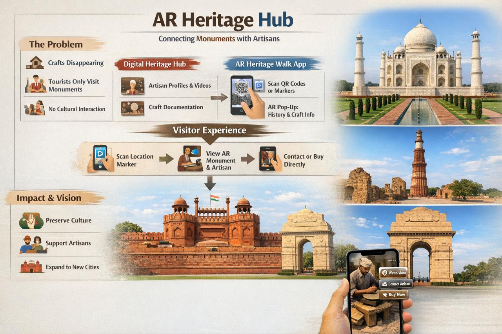

1. About Us
About page represents our idea and the solution we are providing to the problem.
Discover craft masters, hear their stories in augmented reality, and find simple ways to visit, buy, and support their work.
Follow a sunset walk through weaving ateliers and copper workshops.

Three simple layers that connect local craft knowledge with curious visitors.
About page represents our idea and the solution we are providing to the problem.
GPS-triggered stories, archival photos, and process videos revealed as you walk through the city.
Clear calls to action to visit studios, book workshops, buy directly, or donate to local initiatives.